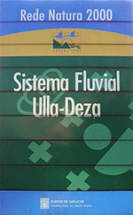

Flora do sistema fluvial Ulla-Deza
Sistema fluvial Ulla-Deza. Reserva Natural Fluvial
O Sistema fluvial Ulla-Deza é un espazo natural galego declarado como Zona especial de conservación (ZEC) e que ampara ao río e ribeiras do río Ulla, o treito final do seu afluente o Deza, as ribeiras doutros afluentes, e o seu esteiro na ría de Arousa. Este espazo percorre fundamentalmente a raia das provincias da Coruña e Pontevedra.
Este espazo está repartido entre os municipios coruñeses de Ames, Boqueixón, Brión, Dodro, Padrón, Rianxo, Teo, Touro e Vedra, e os municipios pontevedreses de Catoira, A Estrada, Pontecesures, Silleda, Valga e Vila de Cruces. A área que protexe é de 1.633 ha.
O Sistema fluvial Ulla-Deza foi declarado como lugar de importancia comunitaria (LIC) en decembro de 2004 e ascendeu a zona especial de conservación (ZEC) en marzo de 2014.
O río Ulla constitúe un amplo val de marismas, brañas e veigas moi fertis. Xunto co río Sar existen pequenos ríos e numerosos regueiros que verten as súas augas no río Ulla.